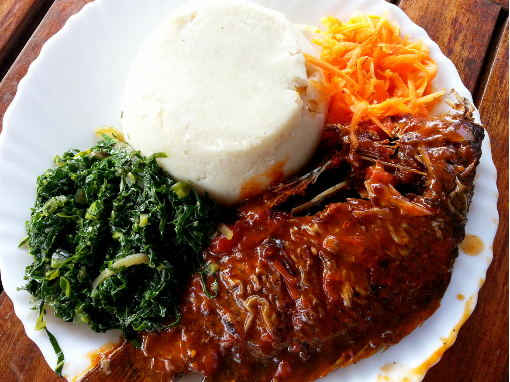
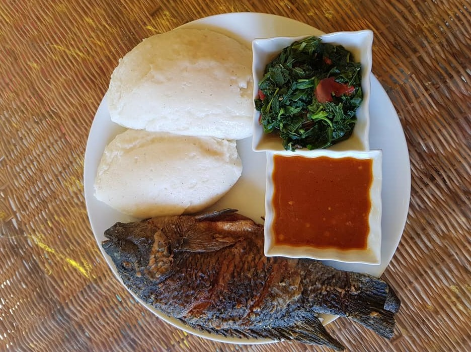
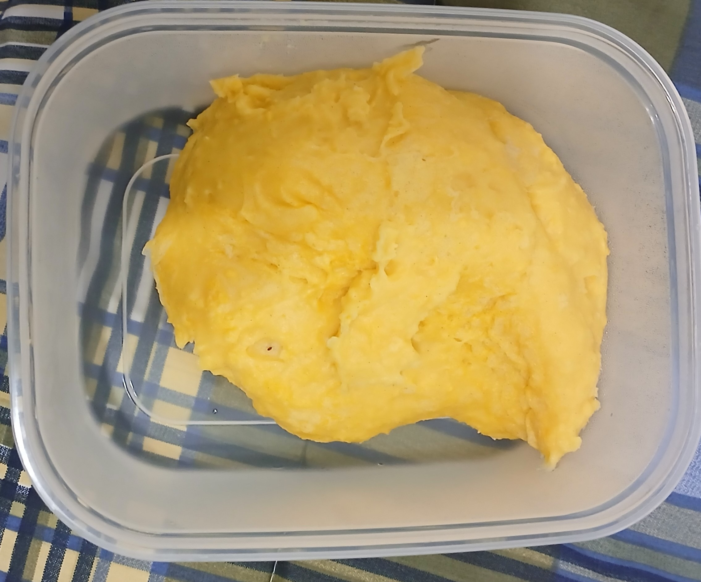
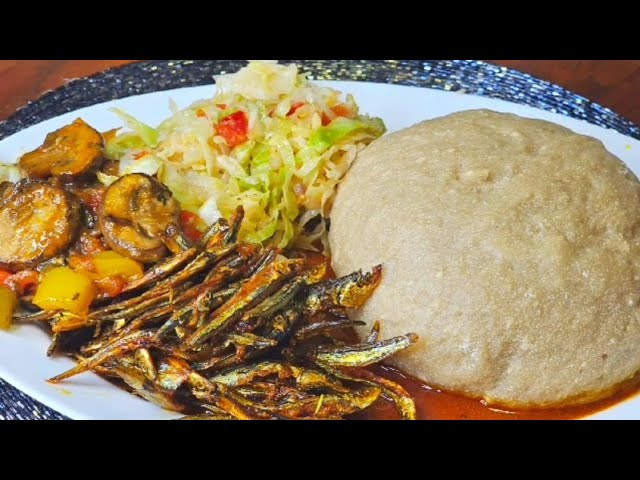

White Nsima

Chambo
Nsima comes in many form and many textures, according to what the person like. Maize has yellow-nsima and white-nsima, which are smooth. There is also cream maize flour which is medium and whole maize flour.
The other types of nsima are yam-nsima and cassava-nsima. They are all depending on culture fo the people in Africa. In Malawi the cassava-nsina is found along the Lake-shore area of Lake Malawi, in the central and the Nothern parts of the lake, and fish is the common side dish that goes together with it.

Yellow
Nsima

Kondowole